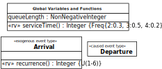
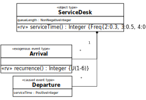

When making a simulation design based on the conceptual model of
the system under investigation, wee need to abstract away from many items of
the conceptual model for obtaining a sufficiently simple design. The right
degree of abstraction depends on the purpose of the model. But abstracting
away from too many things may make a model too unnatural and not
sufficiently generic, implying that it cannot be easily extended to model
additional features (such as more than one service desk).
In our
example, the purpose of the simulation model is to compute the maximum
queue length and possibly also the service utilization. So, we
may abstract away from the following object types:
customers: we don't need any information about individual
customers.
waiting lines: we don't need to know who is next, it's
sufficient to know the length of the queue.
service clerks: we don't need any information about the
service clerk(s).
Notice that, for simplicity, we consider the customer that is
currently being served to be part of the queue. In this way, in the
simulation program, we can check if the service desk is busy by testing if
the length of the queue is greater than 0. In fact, for being able to
compute the service utilization and the maximum queue length, the queue
length is the only relevant state variable.
State variables can be
modeled in the simple form of global variables or in the form of
attributes of suitable object types. Consequently, the simplest
model we can make for the given problem, called ServiceDesk-0, has
only one global variable: queueLength. But, as an alternative, more
explicit, model, called ServiceDesk-1, we will also model the
system state in terms of (one or more) ServiceDesk objects having
only one property: queueLength. As opposed to the simpler model
defining queueLength as a global variable, this model allows defining
simulation scenarios with two or more service desks operating
simultaneously.
We also look for opportunities to simplify our event
model by dropping event types that are not needed, e.g., because their
events temporally coincide with events of another type. This is the case
with service terminations and customer departure events.
Consequently, we can drop the event type service
terminations.
There are two situations when a new service can be
started: either when the waiting line is empty and a new customer arrives,
or when the waiting line is not empty and a service terminates. Therefore,
any service start event immediately follows either a customer
arrival or a customer departure event, and we may abstract away
from service start events and drop the corresponding event type
from the design model.
So we only need to consider customer
arrival and customer departure events, modeled with the two event
types Arrival and Departure.
The event type
Arrival is an example of a type of exogenous events,exogenous event which are not caused by any
causal regularity of the system under investigation and, therefore, have to
be modeled with a recurrencerecurrence
function that allows to compute the time of the next occurrence of an event
of that type. In OES, exogenous event types are a built-in concept such that
an OES simulator takes care of creating the next exogenous event whenever an
event of that type is processed. This mechanism makes sure that there is a
continuous stream of exogenous events throughout a simulation run.
We
also have to model the random variations of two variables: (1) the
recurrence of (that is, the time in-between two) customer arrival events and
(2) the service duration. In a class model, such random variablesrandom variable can be defined as special
class-level ("static") operations, with a stereotype «rv», in the class to
which they belong, as shown in the diagrams below.
We model the
recurrence of customer arrival events as a discrete random variable with a
uniform distribution between 1 and 6 minutes, which we express in the class
diagram of the information design model by appending the symbolic expression
U{1-6} within curly braces to the operation declaration, following
the UML syntax for property/method modifiers.
We model the service
time random variable with an empirical distribution of 2 minutes with
probability 0.3, 3 minutes with probability 0.5 and 4 minutes with
probability 0.2, using the symbolic expression Freq{ 2:0.3, 3:0.5,
4:0.2}.
Computationally, object types and event types correspond
to classes, either of an object-oriented information model, such as a UML
class diagram, or of a computer program written in an object-oriented
programming language, such as Java or
JavaScript.
1.2.1. ServiceDesk-0: Modeling
queueLength as a global variable
As discussed above, the
simplest model for the service desk problem with maximum queue length
statistics (available in the Sim4edu library as ServiceDesk-0) has only
one global variable: queueLength, which is a non-negative integer,
and a global function for computing the random service time, but no object
type.
An information model for ServiceDesk-0 consists of a special
class for defining model variables and functions, and two classes for
defining the event types Arrival and Departure, as shown in .
An
information design model for ServiceDesk-0

In addition to an
information model, which captures the system's state structure, we also need
to make a process model that captures the dynamics of the service desk
system. The dynamics of a system consists of events triggering state changes
and follow-up events. A process model can be expressed with the help of
event rules, which define what happens when an event (of a certain type)
occurs, or, more specifically, which state changes and which follow-up
events are caused by an event of that type.
Event rules can be
expressed with the help of a process model diagram or in pseudo-code, or in
a simulation or programming language. The following Event Graph
provides a process design model for the ServiceDesk-0 simulation scenario.
Circles represent events (or, more precisely, event types) and arrows, which
may be annotated with a delay expression, such as +serviceTime(), represent
event scheduling relationships. An arrow with a mini-diamond at its source
end represents a conditional event scheduling relationship where the
condition is expressed in brackets below or above the
arrow.
A process design model in the form of an Event
Graph, where the state variable Q stands for
queueLength
Event Graphs
have originally been proposed by L. Schruben (1983). Their visual
syntax has been improved and harmonized with BPMN in (Wagner
2019).
The following table shows the two event rules defined by
the above Event Graph, expressed in pseudo-code.
ON (event type)
DO (event routine)
Arrival @ t
INCREMENT queueLength
IF queueLength = 1 THEN
sTime := serviceTime()
SCHEDULE Departure @ (t + sTime)
Departure @ t
DECREMENT queueLength
IF queueLength > 0 THEN
sTime := serviceTime()
SCHEDULE Departure @ (t + sTime)
1.2.2. ServiceDesk-1: Modeling
queueLength as an attribute
In our extended model (ServiceDesk-1) we
represent the state variable queueLength as an attribute of an object
type ServiceDesk. This results in a model with three classes, the
object class ServiceDesk with an attribute queueLength, and
the event classes Arrival and Departure, both with a reference
property serviceDesk for referencing the service desk at which an
event occurs. When we also want to compute the service utilization
statistics, we need to add an attribute serviceTime to the
Departure class for being able to update the service utilization
statistics when a customer departs.
Both event types, Arrival
and Departure, now have a many-to-one association with the object
type ServiceDesk. This expresses the fact that any such event occurs
at a particular service desk, which participates in the event. This
association is implemented in the form of a reference property
serviceDesk in each of the two event types, as shown in .
An
information design model for ServiceDesk-1

In addition to an
information model, we need to make a process model, which captures the
dynamics of the service desk system consisting of arrival and departure
events triggering state changes and follow-up events. The following DPMN
Process Diagram provides a process design model for the ServiceDesk-1
simulation scenario. As in Event Graphs, circles represent event types and
arrows represent event scheduling relationships. DPMN extends Event Graphs
by adding object rectangles, attached to event circles, representing state
change patterns for objects that are affected by events of that
type.
A process design model in the form of a DPMN
Process Diagram
The
following table shows the two event rules defined by the DPMN diagram, which
now account for the fact that both types of events occur at a particular
service desk that is referenced by the event expression parameter
sd.
ON (event type)
DO (event routine)
Arrival( sd) @ t
with sd : ServiceDesk
INCREMENT sd.queueLength
IF sd.queueLength = 1 THEN
sTime := ServiceDesk.serviceTime()
SCHEDULE Departure( sTime, sd) @(t + sTime)
Departure( sd) @ t
with sd : ServiceDesk
DECREMENT sd.queueLength
IF sd.queueLength > 0 THEN
sTime := ServiceDesk.serviceTime()
SCHEDULE Departure( sTime, sd) @(t + sTime)